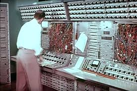
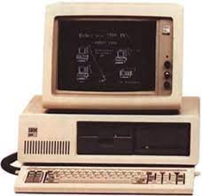
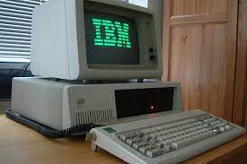
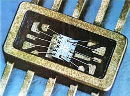
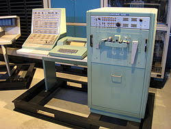
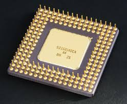
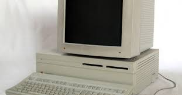
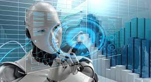

*tubos al vacio: son dispositivos electronicos que estan configurados para proporcionar
amplificacion a las señales electronicas.
Lenguaje de programacion
*Lenguaje maquina:se trata del lenguaje que pueden ejecutar los ordenadores y otros sistemas de computaci�n. Tiene una importancia fundamental, dado que re�ne las instrucciones que recibe una m�quina
a la hora de llevar los procesos para los que haya sido programada.

Caracterizticas
*Gran tamano:El procesador de la UNIVAC pesaba 30 toneladas y requeria el espacio completo de un sal�n de 20 por 40 pies.
*Alto consumo: consumia mucha energia
*Ingreso de datos con tarjetas perforadas: La tarjeta perforada es una l�mina de cartulina que puede almacenar informaci�n en c�digo binario (ceros y unos). La primera herramienta que utiliz� la inform�tica para ingresar
informacion e instrucciones a las computadoras.
ejemplo:
UNIVAC
CARACTERIZTICAS DE LA SEGUNDA GENERACION

periodo
* 1956-1963
Componente/tecnologia principal
* Transistores: Un transistor es un dispositivo que sirve como regulador de la corriente electrica,
lo que permitio la creacion de computadoras mas eficientes en terminos energeticos.
Lenguaje de programacion
*Lenguaje ensamblador: Este lenguaje es basico y no portable, es decir, no podia ser usado en otra computadora,
pero consume menos recursos que su antecesor.

caracterizticas
*Ingreso de datos con tarjetas perforadas.
ejemplo:
PDP-1
CARACTERIZTICAS DE LA TERCERA GENERACION

periodo
* 1964-1971:
Componente/tecnologia principal
* Circuitos integrados: La funcion de un circuito integrado es simplificar una funcion electrica, el mismo nombre nos lo dice circuito.
todo un circuito electrico dentro de uno (resistencias, transitores).
Lenguaje de programacion
*COBOL
*FORTAN
*Pascal
*C
*Basic

caracterizticas
*Incorporacion de sistemas operativos:En este tipo de computadora los datos de entrada y salida eran gestionados a trav�s de dispositivos perif�ricos como el monitor, el teclado o la impresora. Adem�s, se masific� el uso de sistemas operativos, que son un tipo de software
que permite la ejecucion de multiples instrucciones de forma simultanea.
*Ingreso de datos por dispositivos perifericos.
ejemplo:
UNIVAC 1108
CARACTERIZTICAS DE LA CUARTA GENERACION

periodo
* 1971-presente
componente/tecnologia principal
* Microprocesadores: Un microprocesador es un circuito integrado pero mucho mas complejo, capaz de gestionar todas las funciones de una computadora.
Por eso es tambien conocido como Unidad Central de Procesos o CPU.
Lenguaje de programacion
*JavaScript
*Python
*Java
*C#
*Kotlin

caracterizticas
*Portatiles.
*Memoria RAM:almacena datos de programas de manera temporal, mientras el equipo esta encendido.
*Memoria ROM:almacena datos de programas de forma permanente.
*Ingreso de datos por dispositivos perifericos.
ejemplo:
* Apple Machintosh
* PC
CARACTERIZTICAS DE LA QUINTA GENERACION

periodo
* Presente-futuro
Componente/tecnologia principal
*Inteligencia artificial:permitiria que las computadoras reconocieran y aprendieran el lenguaje humano de forma aut�noma,
sin la intervencion del usuario.
*Computacion cuantica:permitiria que las computadoras pudieran trabajar con enormes
cantidades de datos que ahun no son posibles de procesar.
*Nanotecnologica:favorece la creacion de componentes cada vez mas pequeños y con mayor capacidad de almacenamiento.